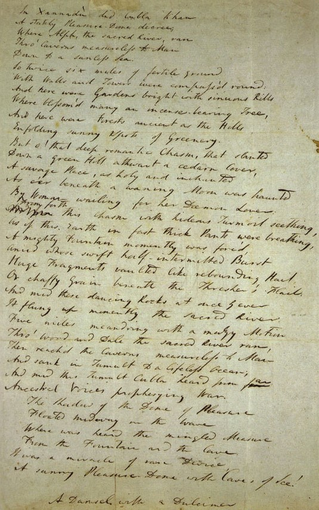
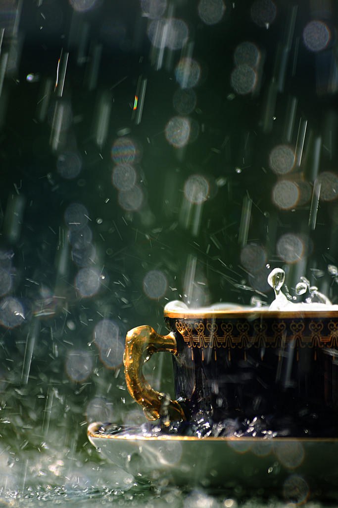
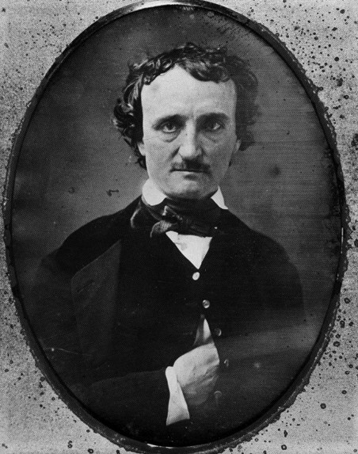

About Me
-
What have you learned about me so far?
-
- I live in Seattle.
- I love the weather here.
- I drink tea, not coffee.
- I love reading.
- I don't drive. (It's just me, my feet, and a bus pass.
- I've lived here for 6 years.
- My hobbies include (but are not limited to) reading, sewing, jewelry making, embroidery, writting, painting, drawing, photography.
-
Ten Arbitrary Favorite Things
-
- My favorite stage direction from a Shakespeare play is (Exit pursued by a bear) from Winter's Tale
- My favorite genre of short story it the weird tale/the gothic short story.
- Favorite authors within that genere include: Blackwood, Poe, and Lovecraft.
- My favorite rock opera movie is Repo! The Genetic Opera.
- My favorite poem that I have memorized (on a good day) is Kubla Khan by Samuel Taylor Coleridge.
- My favorite silly song is 'The Dubious Hat' by Nathaniel Johnstone.
- My favorite costume term to say is 'chaperone with liripipe'.
- My favorite code thing is gets.chomp in Ruby, because I think it's hillarious and adorable.
- My favorite type of video games are puzzle games (Talos Principle, Portal, etc...).
- My favorite rpg that I haven't had a chance to play yet is Changeling: The Lost.
-

In his own hand.
-

So peaceful
-

Creepy author extrordinair